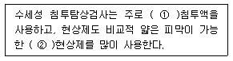
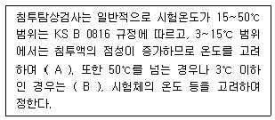
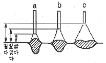

침투비파괴검사산업기사(구) (2008-09-07 기출문제)
1과목: 침투탐상시험원리
1. 후유화성 형광침투탐상시험법에 대한 설명으로 적합하지 않은 것은?
- 침투시간이 단축된다.
- 거친 표면에 적합하다.
- 미세 결함 검출에 적합하다.
- 소형재료나 다량의 검사에 적합하다.
(정답률: 알수없음)

2. 침투탐상시험으로 나타나는 지시의 검출과 관찰에 관한 설명으로 틀린 것은?
- 일반적으로 건식현상제를 적용하는 경우에는 현상제 적용 직후부터 지시가 나타난다.
- 습식현상제를 적용하는 경우에는 현상제의 건조가 완료된 후부터 지시가 나타난다.
- 일반적으로 나타나는 지시는 시간이 경과함에 따라 어느 정도까지 형태가 변하고 점점 크게 나타난다.
- 관찰은 지시가 나타나기 시작한 직후에 수행해야 한다.
(정답률: 알수없음)
3. 침투탐상시험에서 다음 중 현상제의 기능에 대한 설명과 가장 거리가 먼 것은?
- 불연속지시가 나타나도록 도와준다.
- 빨려 나오는 침투량을 조절해 준다.
- 불연속으로부터 침투제를 빨아낸다.
- 침투제와 형광 성능을 증대시킨다.
(정답률: 알수없음)
4. 다른 방법과 비교하여 볼 때 수세성 형광침투탐상검사에서는 산성 잔류물 및 크롬 성분이 매우 유해한데 그 이유는?
- 수세성 침투제에 포함되어 있는 유화제가 있는 곳에서만 산성 및 산화물이 형광과 반응을 하기 때문
- 유화제가 산성 잔류물 및 크롬 성분에 의한 영향을 중화시켜 주기 때문
- 모든 침투탐상 방법에서 형광 성분을 동일하게 영향을 미치게 하기 위하여
- 물이 있는 곳에서 산성 및 산화물이 형광침투제와 반응하여 형광염료의 기능을 약하게 하기 때문
(정답률: 알수없음)
5. 다음 중 휴대용 용제제거성 침투탐상제 세트에 포함되지 않는 것은?
- 세척제
- 침투제
- 유화제
- 현상제
(정답률: 알수없음)
6. 탐상면에 존재하는 미세하고 긁힘자국 같은 불연속의 검출에 후유화성 형광침투탐상시험을 할 때 유화시간은 어떻게 적용하는가?
- 10초동안 적용한다.
- 30초동안 적용한다.
- 일률적으로 5분을 적용한다.
- 실험에 의해 일정시간을 정하여 적용한다.
(정답률: 알수없음)
7. 다른 비파괴검사법과 비교하여 강자성체에의 자분탐상시험은 다음 중 어떤 결함을 검출하는데 가장 적합한 검사법인가?
- 내부 깊숙이 있는 균열
- 미세한 표면균열(Surface crack)
- 표면과 표면 아래 약 10cm 정도에 있는 기공
- 두꺼운 막이 코팅되어 있는 시험체의 내부결함
(정답률: 알수없음)
8. 여러 종류의 비파괴검사를 적용한 설명으로 옳은 것은?
- 초음파탐상시험은 용접부의 블로홀 검출에 적용할 수 있다.
- 자분탐상시험은 알루미늄이나 동관의 접착불량 부분의 검출에 잘 이용된다.
- 침투탐상시험은 용접부의 비파괴검사에 적용되지 않는다.
- 와전류탐상시험은 세라믹관 내외면의 결함검출에 적합한 시험방법이다.
(정답률: 알수없음)
9. 다음 중 비파괴검사에 대한 설명으로 옳은 것은?
- 육안검사(VT)는 비파괴검사의 한 종류이다.
- 누설자속시험은 압력용기의 물의 높이를 검지하는데 적합한 시험방법이다.
- 자분탐상시험은 섬유강화 복합재료의 접촉 불량부를 검출하는데 적합하다.
- 침투탐상시험은 오스테나이트계 스테인리스강의비드 중에 내재하고 있는 미세한 균열을 검출하는 데 적합한 시험방법이다.
(정답률: 알수없음)
10. 다음 중 의료와 산업에 모두 폭넓게 이용되는 방사선 투과시험은?
- 단층 촬영시험(Tomography)
- 중성자투과시험(Neutron radiography)
- 제로 방사선투과시험(Zero radiography)
- 전자 방사선투과시험(Electron radiography)
(정답률: 알수없음)
11. 자분탐상시험의 단점에 대한 설명으로 틀린 것은?
- 시험체의 내부결함 검출이 불가능하다.
- 결함의 모양이 시험체 내부에만 존재하므로 육안으로는 관찰이 불가능하다.
- 불연속의 방향과 자속 방향이 평행한 경우 검출이 어렵게 된다.
- 전기 접점으로 인해 시험체에 손상을 주는 경우가 발생할 수 있다.
(정답률: 알수없음)
12. 와전류탐상시험의 특성에 관한 설명으로 옳은 것은?
- 직접 접촉에 의한 탐상법으로만 이용한다.
- 탐상 데이터를 출력하여 보존하기 곤란하다.
- 신호지시가 잡음 등의 인자에 영향을 받지 않는다.
- 결함의 종류, 형상, 치수를 정확하게 판별하기 어렵다.
(정답률: 알수없음)
13. 침투탐상시험의 신뢰성과 관련된 사항 중 재현성의 표준화에 직접 관계가 있는 것은?
- 대비시험편
- 시험체의 크기
- 시험체의 형상
- 침투탐상검사원
(정답률: 알수없음)
14. 다음 중 압연 강판에 내재된 비금속 개재물을 검출하는데 가장 효과적인 비파괴검사법은?
- 와전류탐상시험
- 초음파탐상시험
- 자분탐상시험
- 침투탐상시험
(정답률: 알수없음)
15. 누설검사법 중 대형 용기나 저장조 검사에 이용되지만 누설위치의 측정에는 적합하지 않은 검사법은?
- 기포누설시험
- 헬륨누설시험
- 할로겐누설시험
- 압력변화누설시험
(정답률: 알수없음)
16. 다음 비파괴검사법 중 시험체의 열 분포상태를 나타내는 열화상을 이용하는 검사법은?
- 홀로그래피
- 서모그래피
- 스트레인 측정
- 초음파 홀로그래피
(정답률: 알수없음)
17. 인간의 가청범위를 넘는 주파수를 초음파라 할 때 약 몇 kHz 이상의 주파수를 초음파라 하는가?
- 20
- 200
- 1000
- 2000
(정답률: 알수없음)
18. 다음 중 방사선투과시험으로 가장 검출하기 어려운 경우는?
- 두께의 차이가 있을 때
- 주변 재질과 밀도의 차이가 있을 때
- 이동하는 방사선빔에 수직한 면상결함일 때
- 주변재질과 1% 이상의 방사선 흡수차를 나타낼 때
(정답률: 알수없음)
19. 다른 비파괴검사법과 비교했을 때 침투탐상시험의 장점으로 볼 수 없는 것은?
- 고도의 숙련된 기술이 요구되지 않는다.
- 제품의 형상, 크기 등에 제한을 받지 않는다.
- 다른 비파괴검사법에 비해 시험방법이 간단하다.
- 온도에 영향을 받지 않으며 정밀한 표면의 균열 깊이를 측정하는데 이용된다.
(정답률: 알수없음)
20. 다음은 비파괴시험의 적용 예에 대하여 설명한 것이다. 옳은 것은?
- 구조부 재질의 적합 여부 또는 규정된 막처리가 잘되어 있는가의 여부를 점검하기 위해서는 외관검사가 주로 이용된다.
- 공항 등에서 수하물의 내용물을 조사하는데는 초음파탐상시험이 주로 이용된다.
- 담금질 경화층 깊이나 막두께 측정에는 전자유도시험이 주로 이용된다.
- 구조상 분해할 수 없는 전기용품의 배선상황을 조사하는데는 침투탐상시험이 주로 이용된다.
(정답률: 알수없음)
2과목: 침투탐상검사
21. 침투탐상검사 중 어떤 탐상 방법을 사용해야 하는가에 대한 고려 대상과 가장 거리가 먼 것은?
- 시험재료의 성질
- 시험장소의 기압
- 예측되는 결함의 종류
- 시험체 표면의 거친 정도
(정답률: 알수없음)
22. 용접 제품에 대한 침투탐상검사를 실시하려고 할 때의 주의할 내용으로 틀린 것은?
- 일반 강재의 경우 상온으로 냉각된 후 실시한다.
- 고장력강일 경우 8시간 경과한 후 실시한다.
- 고장력 퀜칭 및 템퍼링 강재의 경우 2일 이상 경과한 후 실시한다.
- 용접 공정에 따라 용접 전, 중, 후의 3단계로 실시할 수 있다.
(정답률: 알수없음)
23. 수도시설이 없는 장소에서 침투탐상검사를 하려고 한다. 다음 중 가장 적합한 방법은? (단, 다른 시설은 모두 동일하게 갖추었다고 가정한다.)
- 수세성 형광침투탐상검사
- 후유화성 염색침투탐상검사
- 후유화성 형광침투탐상검사
- 용제제거성 형광침투탐상검사
(정답률: 알수없음)
24. 다음 설명 중 ( ) 안의 ①, ② 에 알맞은 것은?

- ① 염색, ② 습식
- ① 형광, ② 습식
- ① 형광, ② 건식
- ① 염색, ② 건식
(정답률: 알수없음)
25. 침투탐상검사에서 건조된 백색 미분말의 현상제를 그대로 사용하는 현상법은?
- 무현상법
- 건식현상법
- 습식현상법
- 속건식현상법
(정답률: 알수없음)
26. 다음 중 용제제거성 염색침투탐상검사를 실시하기 위한 기자재로 볼 수 없는 것은?
- 온도계
- 시계
- 자외선강도계
- 버니어캘리퍼스
(정답률: 알수없음)
27. 비수세성 침투제와 수세성 침투제의 구분으로 옳은 것은?
- 침투제의 점성의 차이다.
- 침투제의 색채의 차이다.
- 침투제에 유화제가 포함되어 있는지의 차이다.
- 비수세성 침투제는 수세성 침투제보다 형광성이 좋다.
(정답률: 알수없음)
28. 형광침투액을 사용할 때 자외선조사등이 필요한 이유는?
- 침투액이 형광을 발하도록 한다.
- 시험체의 표면장력을 감소시킨다.
- 표면의 과잉 침투액을 중화시킨다.
- 침투의 특성인 모세관 작용을 돕는다.
(정답률: 알수없음)
29. 침투제의 성능을 유지하기 위해서는 주기적인 관리가 필요하다. 다음 중 가장 자주 점검해야 할 사항은?
- 오염
- 감도
- 세척성
- 형광의 밝기
(정답률: 알수없음)
30. 용접부를 침투탐상검사할 때 나타날 수 있는 결함과 지시모양이 바르게 연결된 것은?
- 가스구멍 : 선형지시
- 단조겹침 : 원형 지시
- 탕계 : 넓고 단속된 원형 지시
- 균열성 결함 : 연속된 선형 지시
(정답률: 알수없음)
31. 다음 중 수분이 혼입되거나 온도에 의한 영향이 적어 고온의 시험체에 적합한 침투탐상 방법은?
- 수세성 형광침투탐상
- 수세성 염색침투탐상
- 후유화성 형광침투탐상
- 용제제거성 형광침투탐상
(정답률: 알수없음)
32. 현상제가 갖추어야 할 조건이 아닌 것은?
- 침투액을 흡출하는 능력이 좋을 것
- 침투액을 분산시키는 능력이 좋을 것
- 현상 피막이 균일하고 두껍게 형성될 것
- 형광침투액을 사용할 때는 형광을 발하지 말 것
(정답률: 알수없음)
33. 후유화성 침투탐상검사 공정 중에서 유화제는 1차적으로 물세척이 용이하게 하기 위해 적용된다. 또 다른 중요한 용도는 무엇인가?
- 침투액의 침투효과를 증대시킨다.
- 결함에 침투된 침투액을 보존토록 한다.
- 용제세척이 가능하도록 한다.
- 현상제의 적용을 용이하게 한다.
(정답률: 알수없음)
34. 침투탐상장치의 세척탱크 상부에 자외선등이 설치되어 있는 가장 주된 이유는?
- 세척한 후 건조하기 위함이다.
- 초음파 세척을 돕기 위함이다.
- 침투액에 형광염료가 오염되었는가를 점검하기 위함이다.
- 세척 과정에서 과잉 침투액이 세척되었는가를 확인하기 위함이다.
(정답률: 알수없음)
35. 다음 중 검사표면에서 자외선강도에 영향을 미치는 요인이라 볼 수 없는 것은?
- 전구 또는 필터의 오염
- 검사장소에서의 주위 광선
- 검사원의 옷이나 손에 묻은 형광 침투제
- 암실내에 보관하고 있는 건식현상제의 양
(정답률: 알수없음)
36. 단조품의 표면결함으로서 침투탐상검사에서 주로 검출될 수 있는 불연속은?
- 겹칩(Lap)
- 시임(Seam)
- 기공(Porosity)
- 수축균열(Shrink Crack)
(정답률: 알수없음)
37. 다음 중 ( ) 안에 들어갈 내용으로만 옳게 짝지어진 것은?

- A : 침투시간을 늘린다, B : 현상액의 종류
- A : 침투시간을 늘린다, B : 침투액의 종류
- A : 세척시간을 늘린다, B : 현상액의 종류
- A : 세척시간을 늘린다, B : 침투액의 종류
(정답률: 알수없음)
38. 화학플랜트, 발전 플랜트, 항공기 등의 기기 및 구조부품은 정기적으로 검사를 실시하여 안전성을 확보하여야 한다. 이 때 사용 중 일반적으로 표면에 작용하는 응력과 외부 분위기의 영향에 의하여 발생되는 표면손상에 대한 검사가 중요하며 이 경우 발생될 수 있는 결함 종류로 볼 수 없는 것은?
- 편석
- 피로균열
- 크리프균열
- 부식피로균열
(정답률: 알수없음)
39. 다음 중 침투제의 점검방법으로 적절하지 않은 것은?
- 입도를 측정한다.
- 겉모양 검사를 한다.
- 대비시험편을 이용한다.
- 형광침투제인 경우 퇴색시험을 한다.
(정답률: 알수없음)
40. 용제제거성 염색침투제를 시험체 표면으로부터 제거하는 가장 적절한 방법은?
- 용제에 침지시킨다.
- 침투제를 불어 낸다.
- 용제를 스프레이한다.
- 용제를 천에 묻혀 닦는다.
(정답률: 알수없음)
3과목: 침투탐상관련규격
41. 보일러 및 압력용기에 대한 표준침투탐상검사(ASME Sec.V, Art.24 SE-165)에서 검사체 표면이 고온(38℃ 초과)을 유지하는 부품을 수행하는 방법으로 적합한 것은?
- 제조자 권고 사항을 따라 수행한다.
- 최소 크기의 불연속을 포함하는 시험편을 제작하여 수행한다.
- 사용하고자 하는 온도에서 절차를 검증하고 계약당사자와 합의 후 수행한다.
- 고온과 관련한 사항은 별도의 규정이 없으므로 일반적인 탐상방법으로 수행한다.
(정답률: 알수없음)
42. 보일러 및 압력용기에 대한 침투탐상검사(ASME Sec.V, Art.6 App.II)에서 니켈합금 시험체에 대하여 탐상검사할 때 침투탐상제 중에 함유된 특정 물질의 성분분석을 하여 기준함량 이하가 되는지 확인하여야 한다. 이 특정 물질은?
- S
- Cl
- Br
- F
(정답률: 알수없음)
43. 보일러 및 압력용기에 대한 침투탐상검사(ASME Sec.V, Art.6)에 따라 염색침투제를 사용하는 경우의 현상제로 옳은 것은?
- 건식
- 습식
- 속건식
- 건식과 습식
(정답률: 알수없음)
44. 침투탐상 시험방법 및 침투지시모양의 분류(KS B 0816)에 따른 침투탐상시험시 후처리에 관한 설명 중 틀린 것은?
- 현상제가 시험체를 부식시킬 우려가 있을 때 실시한다.
- 현상제가 시험체의 마모를 증가시킬 염려가 있을 때 실시한다.
- 재시험시 후처리는 반드시 실시하지 않아야 한다.
- 후처리시 현상제 제거는 공기 분무, 물 스프레이, 헝겊 등으로 닦아내는 방법이 있다.
(정답률: 알수없음)
45. 보일러 및 압력용기에 대한 침투탐상검사(ASME Sec.V, Art.6)에서 침투시간은, 특정 적용시간에 대한 입증시험을 통해 인정된 경우를 제외하고, 최소 적용시간을 재료, 재료의 형태, 결함의 종류별로 제시하고 있는데 다음 중 최소 침투시간이 가장 긴 것은?
- 강용접부의 균열
- 플라스틱의 균열
- 알루미늄 단조품의 랩
- 세라믹의 기공
(정답률: 알수없음)
46. 침투탐상 시험방법 및 침투지시모양의 분류(KS B 0816)에서 전수검사의 경우 합격품에 대한 표시로 옳은 것은?
- P의 기호 각인
- 녹색으로 착색
- 황색으로 착색
- T의 기호 부식
(정답률: 알수없음)
47. 침투탐상 시험방법 및 침투지시모양의 분류(KS B 0816)에 따른 참상에서 결함을 기록할 때 다음 중 기록에 포함하지 않아도 되는 것은?
- 결함 길이
- 결함 면적
- 결함의 종류
- 결함의 위치
(정답률: 알수없음)
48. 보일러 및 압력용기에 대한 침투탐상검사(ASME Sec.V, Art.6 App.III)에서 시험체 온도가 정상 범위를 벗어날 때 침투액의 성능을 알기 위하여 사용되는 비교시험편으로 옳은 것은?
- 담금질로 균열이 된 알루미늄 시험편
- 오스테나이트 조직이 된 스테인리스강판
- 넓이 3×4인치, 두께 1인치인 크롬 시험편
- 냉간 균열이 미세한 탄소강 시험편
(정답률: 알수없음)
49. 침투탐상 시험방법 및 침투지시모양의 분류(KS B 0816)에 규정된 후유화성 형광침투액(기름베이스)을 사용하는 경우의 시험방법 표시로 옳은 것은?
- FA
- FB
- VA
- VB
(정답률: 알수없음)
50. 항공 우주용 기기의 침투탐상 검사방법(KS W 0914)에서 침투탐상제의 종류에 따라 침투탐상 방법을 분류한다. 타입, 방법, 감도로서 구별되는 탐상제는 무엇인가?
- 현상제
- 유화제
- 침투액계
- 용제성 제거제
(정답률: 알수없음)
51. 침투탐상 시험방법 및 침투지시모양의 분류(KS B 0816)에 의한 시험의 조작에 대한 설명 중 틀린 것은?
- 전처리한 후에는 용제, 세척액, 수분 등을 충분히 건조시켜야 한다.
- 침투처리시 표면에 부착되어 있는 잉여 침투액은 유화처리나 세척처리 후에 배액하여야 한다.
- 물베이스 유화제를 사용할 때는 유화처리 전에 물스프레이로 배액을 목적으로 한 예비 세척을 한다.
- 형광침투액을 사용한 경우의 세척처리시 수온은 일반적으로 10 ~ 40℃ 로 한다.
(정답률: 알수없음)
52. 침투탐상 시험방법 및 침투지시모양의 분류(KS B 0816)에 의한 결함의 분류에서 독립 결함 중 선상 결함은 갈라짐 이외의 결함으로서 그 길이가 나비의 몇 배 이상인 것을 말하는가?
- 2배
- 3배
- 5배
- 7배
(정답률: 알수없음)
53. 보일러 및 압력용기에 대한 침투탐상검사(ASME Sec.V, Art.6)에 의한 탐상시험에서 판독에 대한 설명 중 옳은 것은?
- 최종 판독은 현상시간이 완료된 후 1~60초 이내에 실시하여야 한다.
- 염색침투제를 사용한 경우 판독시 시험 표면은 최소 300룩스 이상의 조명이어야 한다.
- 형광침투제를 사용한 경우 판독시 자외선등의 강도는 시험 표면에서 최소 1000㎼/cm2 가 요구된다.
- 시험되어야 할 표면이 아주 큰 제품인 경우 설정 시간이 넘더라도 전체를 한번에 실시하여야 한다.
(정답률: 알수없음)
54. 항공 우주용 기기의 침투탐상 검사방법(KS W 0914)에 의해 전원이 없는 야외에서 검사체에 부분적인 탐상시험을 수행할 경우 적합한 검사방법은?
- 타입 I, 방법 B
- 타입 I, 방법 C
- 타입 II, 방법 A
- 타입 II, 방법 C
(정답률: 알수없음)
55. 보일러 및 압력용기에 대한 침투탐상검사(ASME Sec.V, Art.6)에서 최종 판독 전의 현상시간의 적용 시점에 대한 설명으로 옳은 것은?
- 건식현상제인 경우 현상제 적용 직전부터 시작
- 건식현상제인 경우 침투제 적용 직후부터 시작
- 습식현상제인 경우 침투액 피막이 형성되기 시작한 때
- 습식현상제인 경우 현상제 피막이 건조되자마자 시작
(정답률: 알수없음)
56. 다음 중 자기 스스로를 계속 복제함으로써 시스템의 부하를 증가시켜 결국 시스템을 다운시키는 프로그램은?
- Spoof
- Authentication
- Worm
- Sniffing
(정답률: 알수없음)
57. PC 운영체제 중 제어 프로그램에 해당하지 않는 것은?
- 감시 프로그램
- 작업 관리 프로그램
- 데이터 관리 프로그램
- 언어 번역 프로그램
(정답률: 알수없음)
58. 다음 중 네트워크 상의 컴퓨터가 가동되는지를 알아보는 명령은?
- ftp
- telnet
- finger
- ping
(정답률: 알수없음)
59. 인터넷에서 도메인 네임을 IP 주소로 변환해 주는 역할을 하는 것은?
- IP 서버
- DNS 서버
- Web 서버
- Proxy 서버
(정답률: 알수없음)
60. 다음 중 통신망의 형태가 아닌 것은?
- 나선(spiral)형
- 그물(mesh)형
- 트리(tree)형
- 성(star)형
(정답률: 알수없음)
4과목: 금속재료 및 용접일반
61. 아크 에어 가우징 장치에서 일반적으로 사용되는 압축공기의 압력(kgf/cm2)으로 가장 적합한 것은?
- 1미만
- 1~2
- 3~4
- 5~7
(정답률: 알수없음)
62. 피복 아크 용접봉에서 피복제의 역할로 잘못 설명한 것은?
- 아크를 안정시키고 필요한 합금원소를 첨가한다.
- 용착금속에 탈산정련 작용을 한다.
- 용착금속의 냉각을 빠르게 하고 전기절연 작용을 한다.
- 용적을 미세화하고 용착효율을 높인다.
(정답률: 알수없음)
63. 용접 지그(Jig)의 사용목적이 아닌 것은?
- 용접자세를 편리하게 한다.
- 용접이 곤란한 재료를 가능하도록 한다.
- 동일 제품을 대량 생산하기 위하여 사용한다.
- 제품의 정밀도를 향상시켜 준다.
(정답률: 알수없음)
64. 각 변형의 방지 대책으로 틀린 것은?
- 개선 각도는 작업에 지장이 없는 한도 내에서 작게 하는 것이 좋다.
- 판두께가 얇을수록 첫 패스측의 개선 깊이를 작게 한다.
- 용접속도가 빠른 용접법을 이용한다.
- 역변형의 시공법을 사용한다.
(정답률: 알수없음)
65. 토치의 팁 대신에 안지름 3.2~6mm, 길이 1.5~3m 정도의 강관(긴 파이프)에 산소를 공급하여 그 강관이 산화 연소할 때의 반응열로 절단하는 방법은?
- 금속 아크 절단
- 플라즈마 아크 절단
- 산소창 절단
- 아크 에어 가우징
(정답률: 알수없음)
66. 다음 그림은 이산화탄소 아크 용접을 할 때 아크 전압의 변화에 따라 비드의 단면형상이 나타나는데, 그림의 c 와 같은 비드 단면형상은 어떤 상태의 아크 전압일 때 가장 잘 나타나기 쉬운가?

- 전압이 낮을 때
- 전압이 높을 때
- 전압이 알맞을 때
- 전압이 수시로 변화할 때
(정답률: 알수없음)
67. 프로젝션 용접의 특징 설명으로 틀린 것은?
- 열전도나 열용량이 다른 것을 쉽게 용접할 수 있다.
- 점간 거리가 작을 경우 용접이 곤란하다.
- 전극의 수명이 길고, 작업 능률이 높다.
- 응용 범위가 넓고, 신뢰도가 높은 용접이 된다.
(정답률: 알수없음)
68. 내용적이 40ℓ인 산소용기의 고압축 압력계가 80 kgf/cm2 으로 나타났다면 가스용접기의 200번 팁(tip)을 사용할 경우 표준불꽃으로 몇 시간 동안 사용이 가능한가?
- 10시간
- 14시간
- 16시간
- 32시간
(정답률: 알수없음)
69. 용접부에 발생된 용접변형을 교정하는 방법 중 외력만으로 소성변형을 일으켜 변형을 제거하는 방법은?
- 박판에 대한 점 수축법
- 형재에 대한 직선 수축법
- 가열 후 해머링하는 방법
- 피닝법
(정답률: 알수없음)
70. 아크 용접의 용접부에 기공이 생기는 원인과 가장 관계가 적은 것은?
- 용접분위기 속에 수소가 너무 많을 때
- 용착부가 급냉 될 때
- 강재 표면에 기름, 녹 등이 있을 때
- 용접 속도가 느릴 때
(정답률: 알수없음)
71. 수소 저장용 합금에 대한 설명으로 틀린 것은?
- 수소를 흡장할 때 팽창하고, 방출할 때는 수축한다.
- 수소 저장용 합금은 수소가스와 반응하여 금속수소화물이 된다.
- 수소가 방출된 금속수소화물은 원래의 수소 저장용 합금으로 되돌아간다.
- 수소로 인하여 전기저항이 완전이 0(Zero)이 되는 합금을 말한다.
(정답률: 알수없음)
72. 다음 중 니켈(Ni) + 철(Fe) 합금이 아닌 것은?
- 콘스탄탄(Constantan)
- 슈퍼인바(Superinvar)
- 퍼말로이(Permalloy)
- 플래티나이트(Platinite)
(정답률: 알수없음)
73. 다음 중 금속의 공통적 특성이 아닌 것은?
- 열과 전기에 양도체이다.
- 이온화하면 음(-)이온이 된다.
- 금속적 고유의 광택을 갖는다.
- 수은을 제외한 상온에서 고체이며, 결정체이다.
(정답률: 알수없음)
74. 다음 중 자기변태에 대한 설명으로 틀린 것은?
- 는 철의 자기변태이다.
- 점진적이고 연속적인 변화가 나타난다.
- 어떤 온도에서 자성의 변화가 나타난다.
- 결정격자의 모양이 변화한다.
(정답률: 알수없음)
75. Fe-C 평형상태도 레데뷰라이트(Ledeburite)가 생성되는 곳은?
- 포석점
- 포정점
- 공정점
- 공석점
(정답률: 알수없음)
76. 다음 중 금속을 냉간가공하였을 때 감소하는 성질은?
- 경도
- 인장강도
- 연신율
- 항복점
(정답률: 알수없음)
77. 백주철을 탈탄열처리하여 순철에 가까운 페라이트 기지로 만들어서 연성을 갖게 한 주철은?
- 회주철
- 흑심가단주철
- 백심가단주철
- 구상흑연주철
(정답률: 알수없음)
78. 다음 중 약호와 그 합금명 및 복합재료의 연결이 잘못된 것은?
- HSLA - 저강도 고합금강
- FRS - 섬유강화 초합금
- PSM - 입자분산 강화 금속
- GFRP - 유리섬유 강화 플라스틱
(정답률: 알수없음)
79. 다음 중 배빗메탈(babbit metal)에 해당되는 것은?
- 주석계 화이트메탈
- 납계 화이트메탈
- 구리계 베어링합금
- 오일리스 베어링합금
(정답률: 알수없음)
80. 다음 중 체심입방격자(BCC)의 결정구조를 갖는 금속은?
- Ag
- Ni
- Mo
- Al
(정답률: 알수없음)